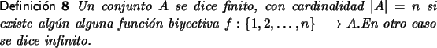
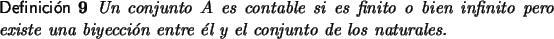
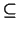
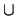
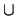

Cardinalidad
Un concepto de vital importancia al estudiar probabilidad radica en la posibilidad de que dado un conjunto A, dentro de un universoLos conjuntos con los que trataremos se dividen en dos grandes grupos: discretos y continuos.


En términos simples un conjunto contable (discreto) es aquel en el cual exista una manera de contar sus elementos, puede tener una cantidad finita o infinita de elementos, pero de alguna manera puede encontrarse una estrategia para contarlos.
Por ejemplo los naturales son un conjunto discreto, de hecho son el conjunto que se utiliza para poder contar otros. Todo conjunto finito es contable, los enteros son un conjunto contable y los racionales también. Invitamos al lector a encontrar estrategias para contar los enteros y los racionales [8].
Para conjuntos discretos finitos la cardinalidad es una manera de asignarles una medida. A continuación listamos un conjunto de propiedades de la cardinalidad.
- Si A  B | A| | B|
- Si
A
B =
 | A 
B| = | A| + | B|
| A 
B| = | A| + | B| - Si | A| = n | P(A)| = 2n
- Si | A| = n, | B| = m | A×B| = mn (1.1)
Cuando los conjuntos no son discretos el concepto de cardinalidad carece de sentido y se sustituye por el término de medibilidad, un concepto fuera de los objetivos de estas notas, no obstante hablaremos levemente de algunos términos necesarios en probabilidades.